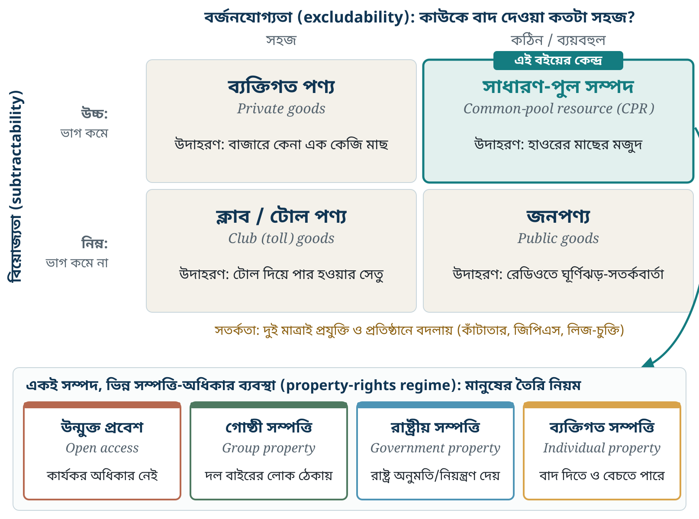
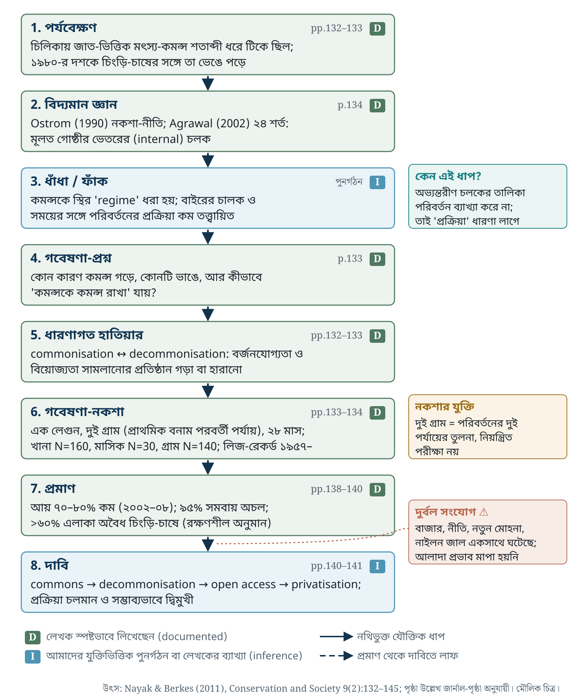

একটি বর্ষার হাওর ভাবুন। চারপাশের দশটি গ্রামের জেলে একই পানিতে জাল ফেলেন। কেউ একজন আজ বেশি মাছ ধরলে কাল অন্যদের জন্য কম থাকে। আবার এত বড় পানিতে কাউকে আটকে রাখাও কঠিন: বেড়া দেওয়া যায় না, পাহারা দিতে খরচ লাগে, রাতে নৌকা চলে। এই দুটি বৈশিষ্ট্য একসঙ্গে থাকলে অর্থনীতিবিদ ও প্রতিষ্ঠান-গবেষকেরা সম্পদটিকে বলেন সাধারণ-পুল সম্পদ (common-pool resource, CPR)।
Ostrom ও সহলেখকেরা সংজ্ঞাটি খুব সাবধানে লিখেছেন। CPR হলো এমন সম্পদ-ব্যবস্থা, যেখানে (১) শারীরিক বা প্রাতিষ্ঠানিক উপায়ে সুবিধাভোগীদের বাদ দেওয়া বিশেষভাবে ব্যয়বহুল, এবং (২) একজনের আহরণ অন্যদের জন্য প্রাপ্যতা কমায় (Ostrom et al. 1999, p.278)। লক্ষ করুন, তাঁরা এর ঠিক আগের বাক্যেই লিখেছেন যে “resource system” সংক্রান্ত ধারণা আর “property rights” সংক্রান্ত ধারণা আলাদা রাখতে হবে। এই বইয়ের প্রথম শিক্ষা এই পার্থক্যটিই।
মূল ধারণা · Core concept CPR একটি সম্পদ-বৈশিষ্ট্যের নাম; common property একটি অধিকার-ব্যবস্থার নাম; open access মানে কার্যকর অধিকারের অনুপস্থিতি। তিনটিকে সমার্থক ধরলে পুরো সাহিত্য ভুল পড়া হবে। Ostrom et al. (1999, Table 1) চারটি অধিকার-ব্যবস্থা দেখান: open access, group property, individual property, government property।
১৯৬৮ সালে Garrett Hardin লিখলেন, সবার জন্য খোলা চারণভূমিতে প্রত্যেক পশুপালক নিজের লাভে আরেকটি গরু যোগ করবে, আর সম্মিলিত ফল হবে ধ্বংস। Ostrom (2007) পরে দেখান যে Hardin-এর গল্প আসলে পাঁচটি অনুমানের ওপর দাঁড়ানো: কোনো শাসনব্যবস্থা নেই, ব্যবহারকারীরা বিচ্ছিন্নভাবে স্বল্পমেয়াদি লাভ খোঁজেন, ইত্যাদি। সমস্যা হলো, এই গল্পকে অনেকেই সব “কমন্স”-এর ওপর চাপিয়ে দিয়ে বললেন: হয় রাষ্ট্রীয়করণ, নয় ব্যক্তিগতকরণ। CPR আর property regime আলাদা করার ফলে প্রশ্নটি বদলে যায়। “সম্পদটি কি ধ্বংস হবে?” না জিজ্ঞেস করে আমরা জিজ্ঞেস করি: কোন নিয়ম ও অধিকার-ব্যবস্থায়, কোন পরিস্থিতিতে ব্যবহারকারীরা টেকসই ব্যবহার গড়ে তোলেন?

প্রথমে উপরের ছকে নিজের সম্পদটি কোন ঘরে পড়ে তা ঠিক করুন (গুণ)। তারপর নিচের সারিতে জিজ্ঞেস করুন, এই মুহূর্তে কে কাকে বাদ দিতে পারে আর কে নিয়ম বানায় (অধিকার)। দুটি প্রশ্নের উত্তর আলাদা হতে পারে।
কীভাবে মাপবেন · Operationalising বর্জনযোগ্যতা মাপার একটি মাঠ-প্রশ্ন: “বাইরের একটি নৌকাকে আপনার জলমহালে ঢুকতে বাধা দিতে কত খরচ ও ঝুঁকি লাগে?” বিয়োজ্যতা মাপতে দরকার জৈবিক তথ্য: ধরা-চাপ বাড়লে প্রতি একক প্রচেষ্টায় ধরা (CPUE) কমে কি না। প্রথমটি সামাজিক-প্রাতিষ্ঠানিক তথ্য, দ্বিতীয়টি প্রতিবেশ-বিজ্ঞানের। এখানেই আন্তঃবিষয়ক কাজের প্রয়োজন শুরু।
নিজে যাচাই করুন · Check yourself
Nayak ও Berkes-এর ২০১১ সালের প্রবন্ধটি একটি সাধারণ পর্যবেক্ষণ দিয়ে শুরু হয়, কিন্তু সেখান থেকে একটি নতুন ধারণা দাঁড় করায়। নিচের চিত্রে প্রবন্ধের যুক্তিকে আটটি ধাপে ভাগ করা হয়েছে। প্রতিটি ধাপে চিহ্ন দেওয়া আছে: D মানে লেখকেরা নিজেরা স্পষ্ট লিখেছেন, I মানে এটি আমাদের যুক্তিভিত্তিক পুনর্গঠন বা লেখকের ব্যাখ্যামূলক দাবি। লেখকেরা মনে মনে কী ভেবেছিলেন তা প্রকাশিত লেখা থেকে জানা যায় না U; আমরা শুধু লেখার কাঠামো ও সিদ্ধান্ত থেকে যুক্তি পুনর্গঠন করি।

কেন একসঙ্গে? · Why together খানা-জরিপ (N=160) + ১৮ মাসের মাসিক পর্যবেক্ষণ (N=30) + ১৯৫৭ সাল থেকে লিজ-রেকর্ড। জরিপ একটি সময়ের ছবি দেয়: কতজন পেশা বদলেছেন, কত ঋণ। মাসিক পর্যবেক্ষণ দেখায় সংকটে খানা কীভাবে সাড়া দেয়। লিজ-রেকর্ড দেখায় অধিকার কাগজে কীভাবে বদলেছে। শুধু জরিপ থাকলে আমরা জানতাম মানুষ গরিব হয়েছে, কিন্তু অধিকার হারানোর ঐতিহাসিক ক্রম জানতাম না। শুধু রেকর্ড থাকলে জানতাম কাগজের অধিকার, কিন্তু বাস্তবে মাছ ধরতে যেতে পারছেন কি না জানতাম না। লেখকেরা ঠিক এই ফাঁকটি দেখান: জেলেরা লিজ-ফি দিয়ে যাচ্ছেন, অথচ বাস্তবে অধিকারের “bundle”-এর একটিও তাঁদের হাতে নেই (p.142)।
প্রমাণ-যাচাই · Evidence check দুটি গ্রাম বাছাই করা হয়েছিল “প্রাথমিক” ও “পরবর্তী” পর্যায়ের প্রতিনিধি হিসেবে (p.133)। এটি একটি পর্যায়-তুলনা, কারণ নির্ণয়ের নিয়ন্ত্রিত নকশা নয়। এছাড়া প্রবন্ধের ভেতরে দুটি সংখ্যা মেলে না: টাটাকে হস্তান্তরিত এলাকা p.137–138-এ ৬০০ হেক্টর, p.141-এ ১,১০০ হেক্টর; আর FISHFED-এর ক্ষমতা গ্রহণ Table 3-এ ১৯৮৮, মূল লেখায় ১৯৯১। কর্মশালায় এগুলো জিজ্ঞেস করার মতো প্রশ্ন।
৫টি অবশ্য-জানা ধারণা
কর্মশালায় তিনটি প্রশ্ন
ক. দুই গ্রামের বাইরে কোন তথ্য দিয়ে বাজার-চালক আর ২০০১-এর নতুন মোহনার প্রভাব আলাদা করা যেত?
খ. জাত-ভিত্তিক বর্জন একদিকে কমন্স টিকিয়েছে, অন্যদিকে অসমতা তৈরি করেছে (notes 7, 9)। “কমন্সকে কমন্স রাখা” লক্ষ্যে এই দ্বন্দ্ব কীভাবে সামলাবেন?
গ. বাংলাদেশের জলমহাল-লিজ ব্যবস্থায় কি একই ধরনের “লিজ-ফি দিয়ে দাবি টিকিয়ে রাখা” দেখা যায়? কোন প্রমাণে বোঝা যাবে?
নোট লিখুন